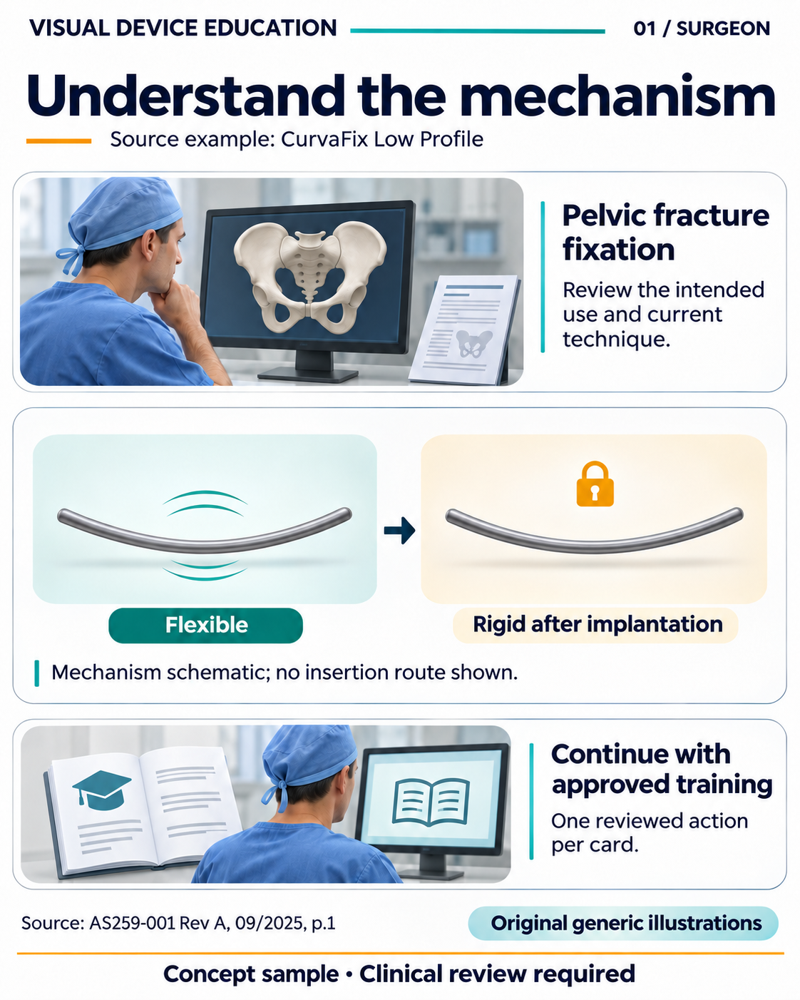

A map of the real journey
The actual participants, customer tasks, unanswered questions and handoffs across marketing, purchasing, first use and support.
OUR SERVICE
Your company meets customers through content, sales conversations, purchasing, training and everyday support. Each encounter can reveal work that needs to be easier, an answer that is missing or a problem your product could solve better.
We connect those encounters into a working feedback system. Together, we select a meaningful change, prepare and carry out the work, follow the final business result and update the next interaction.
Discuss your customer journeyThe deliverables depend on the product, customer and actual buying or use process. Work can start at one touchpoint and connect to others as priorities become clearer.
The actual participants, customer tasks, unanswered questions and handoffs across marketing, purchasing, first use and support.
Articles, explainers, checklists and focused distribution that help relevant people find you and bring real questions into conversation.
Source-linked account research, relevant evidence, proposals and purchasing information for the people in the actual decision.
Organized, approved materials, clear responsibilities and learning resources. Product-use or clinical questions go to the appropriate qualified people.
Customer questions, checked answers, unresolved issues and feedback that can inform service and product decisions.
The agreed change, its conditions, comparison, observation period, final result and implications for the next cycle.
HOW ONGOING WORK OPERATES
Each cycle has an agreed scope, owner and review date. We change one factor, compare the final business results over an agreed period and retain the context and uncertainty.
Ongoing service covers defined monitoring, maintenance and new improvements. Your team keeps the working materials and records. Additional work is agreed before it begins.
Artificial intelligence assists research, analysis and preparation. Your team reviews product-specific information and agrees the actions. Specialist work, account access, data and responsibilities are defined for the actual engagement.
CHANNELS AND EXTERNAL COSTS
Content, channels and advertising are selected for the actual task and evidence. Where advertising management is included, the platform, campaigns, creative responsibilities and budget are agreed explicitly.
You control the account and pay media platforms directly. Third-party costs have a separate agreed payer and cap. Work already included in a project is not billed a second time.
FIRST ENTERPRISE VALIDATION
Agree the scope, required inputs, period, evidence, acceptance standard, fee and payment date before work.
There is no prepaid service fee for the first enterprise validation. If the valid validation misses the agreed standard, no service fee is charged for that validation.
Insufficient data, unmet prerequisites and additional research or retests follow separately agreed terms. Continued work is not unlimited.
The standalone US$99 assessment is purchased separately. Research delivery, a useful testing decision and additional sales are different outcomes. If acceptance requires qualified opportunities or sales, producing a report cannot replace that condition. Third-party costs have a separate agreed payer and cap.
YOUR NEXT STEP
We'll discuss where it connects to the wider journey, what help would be useful and how to assess the result. A separate assessment purchase is optional.
MEDICAL-DEVICE VISUAL GUIDES
Different teams need different explanations. See three role-specific concepts and a first draft grounded in a manufacturer’s current surgical technique guide.
Explore the visual guides and source draft →
Generic concept illustration · Independent, unreviewed draft